← Index · ← Previous · Next →
Authors: Chun-Yang Luan, Xiang-Jie Lie, Lin Cheng, Gang-Xi Wang, Cheng-Kang Pan, Xiang Zhang, Xingjian Zhang
Type: both · Category: quantum information and computing · PDF: https://arxiv.org/pdf/2605.09556v1
Analysis basis: abstract only; PDF text extraction failed or PDF unavailable
Summary. This paper introduces a way to perform randomness extraction in a stream-like fashion rather than in blocks. By using a pre-generated pseudo-random mask and bitwise XOR operations, the authors reduce latency, making real-time quantum random number generation more efficient without sacrificing security.
Why it may be interesting. not directly relevant
Main problem. The latency and buffering overhead caused by conventional block-wise randomness extractors hinder real-time quantum random number generation.
Main result. The authors generalize a stream-processing paradigm to universal2 random hashing extractors, proving that this stream implementation preserves the security guarantees of block-wise protocols while enabling on-the-fly processing.
Method. The method shifts computational burden to an offline pre-processing stage to generate a pseudo-random mask, allowing raw data to be processed via a simple bitwise XOR operation.
Model / system. The framework is applied to randomness extractors based on Toeplitz, circulant, and modified Toeplitz matrices, and benchmarked using realistic quantum experimental data.
Assumptions / limitations. The security of the stream implementation is assumed to be equivalent to the original block-wise protocols.
Paper structure. The paper introduces the problem of block-wise latency, proposes a generalized stream-processing framework for universal2 hashing, provides mathematical proofs for security preservation, details the transformation of three specific matrix constructions, and concludes with performance benchmarks using experimental data.
Randomness extraction is indispensable for quantum random number generators, serving to eliminate bias and potential information leakage from raw measurement data. Conventional extractors operate in a block-wise fashion, requiring the complete accumulation of raw data before processing. To circumvent the latency and buffering overheads that hinder real-time random number generation, recent work introduced a stream-cipher implementation for the randomness extractor based on the Toeplitz matrix hashing. In this work, we generalize this stream-processing paradigm to the broader family of randomness extractors based on (almost dual) universal$_2$ random hashing. Specifically, we shift the computational burden from a time-consuming block-wise post-processing stage into an offline pre-processing stage that generates a pseudo-random mask. This allows the raw data to be processed by the mask on the fly using a simple bitwise exclusive-OR operation. Crucially, we prove that this stream implementation strictly preserves the security guarantees of the original block-wise protocols. We detail the transformation of three typical constructions -- based on standard Toeplitz, circulant, and modified Toeplitz matrices -- from block to stream implementations, and benchmark their practical performance using realistic quantum experimental data. We anticipate our framework will enhance the efficiency of real-time quantum cryptographic systems.
Authors: Mamta Ale, Harsimranjit Kaur, Kuldeep Suthar
Type: theory · Category: quantum gases · PDF: https://arxiv.org/pdf/2605.10538v1
Analysis basis: abstract only; PDF text extraction failed or PDF unavailable
Summary. This paper explores how the tilt of magnetic dipoles and beyond-mean-field corrections influence the formation and structure of vortex lattices in rotating dipolar BECs. It identifies a transition between square and triangular lattices and demonstrates that LHY corrections can prevent vortex-free states and even lead to condensate fragmentation. These findings are directly applicable to current experiments with anisotropic dipolar quantum gases.
Why it may be interesting. It provides insights into how beyond-mean-field effects and dipole anisotropy influence the stability and topology of vortex states, which is highly relevant for controlling many-body dynamics in dipolar quantum gases.
Main problem. Investigating the structural transitions, fragmentation, and vortex lattice formation in rotating, tilted, quasi-two-dimensional dipolar Bose-Einstein condensates.
Main result. The study reveals a transition from square to triangular vortex lattices as the tilt angle approaches a critical value, and shows that Lee-Huang-Yang corrections enable vortex formation in elongated condensates and cause fragmentation under strong rotation.
Method. Numerical analysis using an extended Gross-Pitaevskii equation that incorporates the Lee-Huang-Ying (LHY) correction to account for beyond-mean-field effects.
Model / system. A harmonically confined, quasi-two-dimensional, rotating dipolar Bose-Einstein condensate with tilted magnetic dipoles relative to the polarization axis.
Key observables. Vortex lattice structure (square vs. triangular), condensate shape/elongation, and condensate fragmentation.
Important parameters / regimes. Tilt angle of dipoles, rotation frequency, magic angle, and the presence of Lee-Huang-Yang corrections.
Assumptions / limitations. The system is treated within the framework of an extended Gross-Pitaevskii equation in a quasi-two-dimensional geometry.
Paper structure. The paper presents an investigation of vortex lattice dynamics, covering structural transformations due to tilt, the impact of LHY corrections on stability and fragmentation, and the effects of rotational frequency quenches.
We investigate the vortex lattices of harmonically confined quasi-two-dimensional tilted rotational dipolar Bose-Einstein condensates. By employing an extended Gross-Pitaevskii equation for a rotating condensate, we reveal the structural transformation of vortices from square to triangular lattices as the tilt of dipolar bosons relative to the polarization axis approaches a critical angle. When the tilt of the magnetic dipoles surpasses the magic angle, the condensate elongates diagonally and becomes devoid of vortices. Moreover, we include the Lee-Huang-Yang correction, which enables the formation of vortices in the elongated condensate. Additionally, when dipoles are oriented perpendicular to the polarization axis, the Lee-Huang-Yang correction results in the fragmentation of condensates under strong rotation. The quench dynamics of the rotational frequency demonstrate the development of vortex lattices; however, with a strong rotational quench, the condensate remains free of vortices. Our numerical analysis highlights the beyond mean-field effects of the rotational properties of anisotropic dipolar bosons, which can be observed in current dipolar quantum gas experiments.
Authors: Ángel Salazar, Quray Potosí, David Laroze, Laura M. Pérez, Benjamín de Zayas, Clara Rojas
Type: theory · Category: other · PDF: https://arxiv.org/pdf/2605.10497v1
Analysis basis: abstract only; PDF text extraction failed or PDF unavailable
Summary. This paper uses the Log derivative method to solve the Klein-Gordon equation in an alpha-attractor potential. It confirms that superradiance occurs in this specific potential configuration. The results are validated by comparing them to established analytical solutions for the hyperbolic tangent potential.
Why it may be interesting. not directly relevant
Main problem. The study aims to investigate the occurrence of the superradiance phenomenon within the context of the Klein-Gordon equation under an alpha-attractor potential.
Main result. The authors successfully demonstrated the presence of superradiance by calculating reflection and transmission coefficients and validated their approach against known analytical solutions.
Method. The researchers employed the Log derivative method to solve the time-independent one-dimensional Klein-Gordon equation.
Model / system. The system consists of a one-dimensional Klein-Gordon scalar field interacting with an alpha-attractor potential.
Key observables. Reflection coefficient (R) and transmission coefficient (T).
Important parameters / regimes. alpha-attractor potential parameters; hyperbolic tangent potential (used for validation).
Assumptions / limitations. The study assumes a time-independent, one-dimensional framework for the Klein-Gordon equation.
Paper structure. The paper presents a solution to the Klein-Gordon equation using the Log derivative method, demonstrates the presence of superradiance, and concludes with a validation step comparing results to the analytical hyperbolic tangent potential solution.
In this article, we solved the time--independent one--dimensional Klein--Gordon equation in the presence of $α$--attractor potential using the Log derivative method. We calculated the reflection coefficient $\mathcal{R}$ and the transmission coefficient $\mathcal{T}$, showing that the superradiance phenomenon is present. In order to demonstrate the accuracy of our method, we performed a comparison with the analytical solution for the hyperbolic tangent potential.
Authors: João Gabriel Simões Delboni, M. O. Hase
Type: theory · Category: statistical mechanics · PDF: https://arxiv.org/pdf/2605.10644v1
Analysis basis: full PDF text, analyzed in chunks
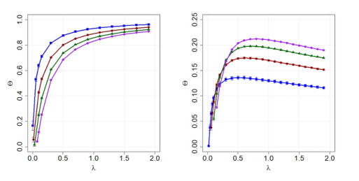
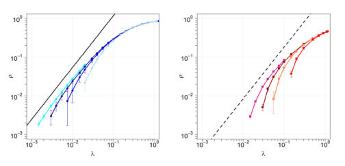
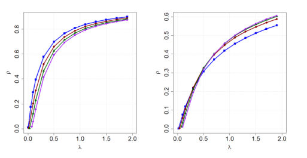
Summary. This paper explores how self-limiting behaviors, such as social distancing or reduced contact, change the dynamics of disease spreading on complex networks. It reveals that while the epidemic threshold remains unchanged, the way infection spreads through network links becomes non-monotonic and can even reverse the impact of network heterogeneity.
Why it may be interesting. not directly relevant
Main problem. The study investigates how a nonlinear mitigation mechanism, representing behavioral responses or self-limiting dynamics, alters the spreading of an SIS epidemic on scale-free networks.
Main result. The mitigation factor induces non-monotonic behavior in the link infection probability and causes an inversion in the dependence of epidemic prevalence on the degree exponent at high transmission rates.
Method. The authors use a Heterogeneous Mean-Field (HMF) approach with an annealed approximation and validate analytical results using Gillespie stochastic simulations.
Model / system. The system is a Susceptible-Infected-Susceptible (SIS) model on scale-free networks with a power-law degree distribution, modified by a Malthus-Verhulst-type saturation term to account for reduced transmission.
Key observables. Endemic prevalence (rho), probability that a link points to an infected node (Theta), and the epidemic threshold (lambda_c).
Important parameters / regimes. Transmission rate (lambda), recovery rate (mu), degree exponent (gamma), and system size (N).
Assumptions / limitations. The network is assumed to be uncorrelated (no degree correlations) and follows a configuration model ensemble.
Figures summary. Fig 1 shows prevalence vs. transmission rate with data collapse for different system sizes; Fig 2 demonstrates the non-monotonicity of the link infection probability; Fig 3 illustrates the inversion effect where larger degree exponents lead to higher prevalence at high transmission rates.
Paper structure. The paper introduces the modified SIS model, derives analytical self-consistency equations using the HMF approach, performs asymptotic analysis for different degree exponent regimes, and compares these results with stochastic simulations.
We investigate infectious disease spreading on scale-free networks using a heterogeneous mean-field approach applied to the susceptible-infected-susceptible model, incorporating a mitigation factor. Individual heterogeneity is incorporated through a power-law distribution, while a mitigation factor accounts for behavioral responses and external effects that effectively reduce transmission from infected individuals. This mechanism, inspired by Malthus-Verhulst-type constraints, introduces a nonlinear saturation effect that encodes self-limiting dynamics in a tractable way. Analytical results are supported by stochastic simulations. We find that the mitigation factor induces a nontrivial behavior in the probability that a link points to an infected node, which develops a maximum at finite infection rates. In contrast, the overall prevalence remains a monotonically increasing function of the transmission rate. Additionally, the mitigation mechanism leads to an inversion in the dependence of epidemic observables on the degree exponent at sufficiently high transmission rates. While in the standard model smaller exponents yield higher endemic prevalence, in the modified model this trend reverses, with larger exponents producing higher prevalence and increased infection probability along network links.
Authors: Yangshuai Wang
Type: theory · Category: quantum information and computing · PDF: https://arxiv.org/pdf/2605.09909v1
Analysis basis: full PDF text, analyzed in chunks
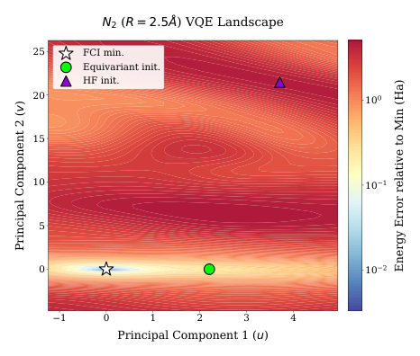
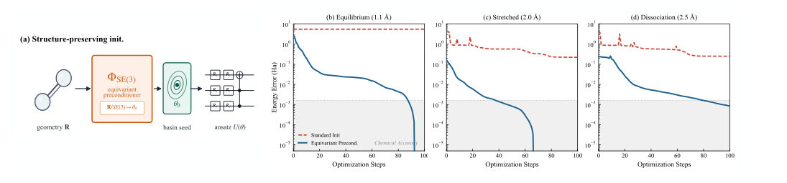
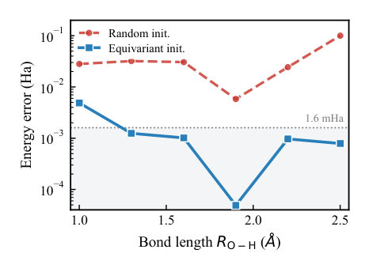
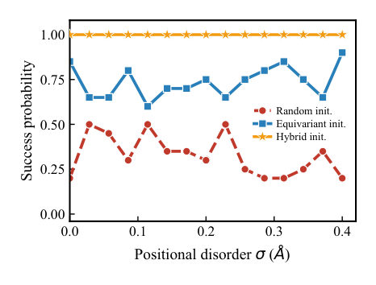
Summary. The paper introduces a method to prevent VQE optimization failures by using an equivariant neural network to initialize quantum circuit parameters. By mapping molecular geometry directly to the correct energy basin, it avoids both barren plateaus and symmetry-broken local minima. This significantly improves the accuracy and efficiency of quantum molecular simulations.
Why it may be interesting. It provides a way to bypass the expensive 'basin discovery' phase in quantum chemistry simulations by using classical equivariant machine learning to prepare the quantum state.
Main problem. Variational Quantum Eigensolvers (VQE) often fail in strongly correlated regimes because the initial state is placed in a non-ground-state energy basin or suffers from barren plateaus.
Main result. An equivariant preconditioner reduces Hartree-Fock initialization errors by 38x to 6250x, successfully placing the optimizer in the correct ground-state basin for molecules like N2 and H2O.
Method. A classical MACE-type equivariant neural network maps nuclear geometry to circuit parameters, effectively performing basin selection before the quantum optimization loop begins.
Model / system. Electronic structure Hamiltonians for strongly correlated molecules (e.g., N2, H2O, LiH, H8, H10 chains) using a hardware-efficient ansatz and the Born-Oppenheimer approximation.
Key observables. Gradient variance, Hessian eigenspectrum (eigenvalues), energy error (in Hartree and mHa), and gradient statistics (concentration-controlled vs. curvature-controlled).
Important parameters / regimes. SE(3) covariance, body-order (nu=3), radial cutoff (5.0 A), and the transition from Haar-like to basin-localized regimes.
Assumptions / limitations. The electronic Hamiltonian is SE(3)-equivariant; the optimization is performed within a localized, strongly convex basin.
Figures summary. Visualizations of energy landscape topology for N2, error-tail statistics comparing random vs. equivariant initialization, and schematic of the hardware-efficient ansatz.
Paper structure. The paper defines the failure mechanisms of VQE (barren plateaus and basin misidentification), introduces the SE(3)-equivariant preconditioner, provides mathematical proofs for gradient control in localized basins, and demonstrates numerical success across various molecular benchmarks.
Variational quantum eigensolvers fail before optimization begins when strong correlation splits the molecular energy landscape into competing basins and the initial state selects a non-ground-state basin. We introduce a geometry-conditioned preconditioner $\mathcal{P}_{\mathrm{eq}}:\mathbf{R}\mapsto\boldsymbolθ_0$ constrained by the $SE(3)$ covariance of the molecular Hamiltonian, so that nuclear geometry is mapped directly into circuit parameters in the correlated ground-state basin. This basin localization changes the relevant gradient statistics from concentration controlled to curvature controlled. In statevector benchmarks on six stretched molecules, $\mathcal{P}_{\mathrm{eq}}$ reduces Hartree--Fock initialization errors by factors of $38\times$--$6250\times$, reaches sub-mHa initialization in CO, LiH, and H$_8$, and places N$_2$, H$_2$O, and BeH$_2$ in the mHa-scale correlated basin. In disordered H$_{10}$ chains, equivariant basin targeting and stochastic escape reach unit success probability at fixed optimization budget. The procedure performs basin selection before the shot-limited quantum loop; the quantum circuit then refines correlation inside the selected basin.
Authors: Gabor Csire, Maria Teresa Mercaldo, Balazs Ujfalussy, Carmine Ortix, Mario Cuoco
Type: theory · Category: strongly correlated electrons · PDF: https://arxiv.org/pdf/2605.10700v1
Analysis basis: full PDF text, analyzed in chunks
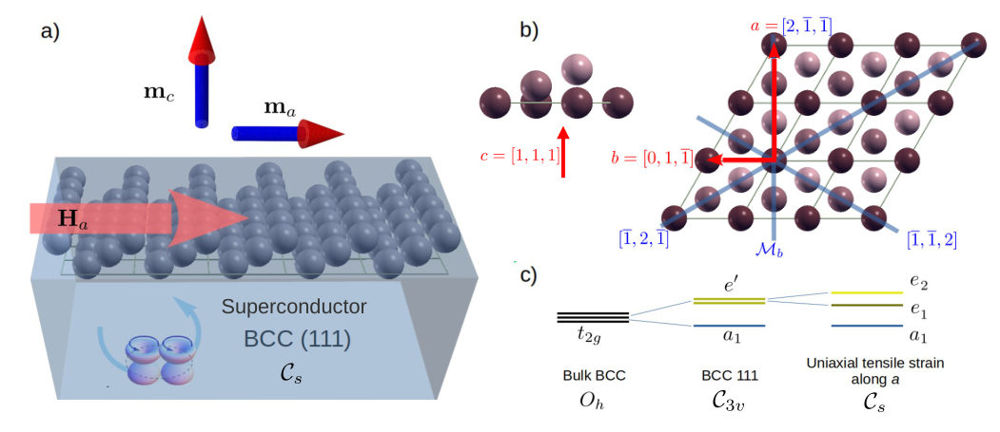
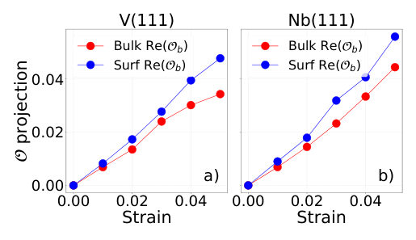
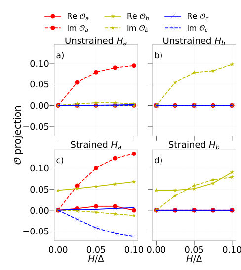
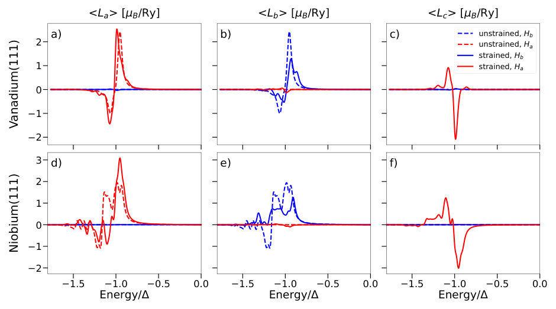
Summary. This paper shows that applying strain to elemental superconductors like Niobium can create Cooper pairs with orbital angular momentum. This state is uniquely identifiable by a transverse magnetic response, where an in-plane magnetic field generates an unexpected perpendicular magnetization, providing a foundation for superconducting orbitronics.
Why it may be interesting. not directly relevant
Main problem. The difficulty in finding experimental signatures and material platforms for superconducting orbitronics, specifically identifying how to manipulate orbital angular momentum in superconductors.
Main result. The authors demonstrate that breaking crystalline symmetry via strain in elemental superconductors like V and Nb activates interorbital pairing, leading to a novel transverse magnetic response where an in-plane field induces an out-of-plane orbital magnetization.
Method. Superconducting density functional theory (SCDFT) using the Kohn-Sham Dirac-Bogoliubov-de Gennes (KS-DBdG) Hamiltonian and the Screened Korringa-Kohn-Rostoker Green's function method.
Model / system. The study focuses on bcc(111) elemental superconductors, specifically Vanadium and Niobium, considering both bulk and surface geometries under uniaxial tensile strain.
Key observables. Transverse magnetic response (induced out-of-plane orbital magnetization), interorbital pairing amplitudes, and energy-resolved orbital angular momentum.
Important parameters / regimes. Strain levels (0.00 to 0.04), magnetic field orientation (in-plane), and the transition from trigonal (C3v) to Cs symmetry.
Assumptions / limitations. The pairing potential is treated as a semi-phenomenological parameter, and the superconducting host is assumed to be an isotropic s-wave spin-singlet BCS-like state.
Figures summary. Fig 1 shows a schematic of the transverse response and symmetry reduction; Fig 2 plots the evolution of interorbital pairing with strain; Fig 3 shows interorbital components under different field orientations; Fig 4 presents energy-resolved orbital angular momentum.
Paper structure. The paper introduces the problem of superconducting orbitronics, describes the symmetry-breaking mechanism via strain, presents SCDFT calculations for V and Nb, details the resulting transverse magnetic response, and discusses experimental detection methods and vortex engineering.
We demonstrate how crystalline symmetry lowering, as for instance through strain, allows elemental superconductors such as vanadium and niobium to realize spin-singlet orbitally polarized Cooper pairs composed of electrons with identical orbital moments. Using superconducting density functional theory, we show that lowering of trigonal symmetry to $C_s$, thus keeping only a single mirror plane, activates interorbital pairing in bulk and (111) surfaces, with a pronounced surface enhancement. In a magnetic field, the resulting orbitally polarized superconducting state leads to a novel transverse magnetic response. For in--plane field orientations that break the remaining mirror symmetry, a sizable orbital magnetization emerges perpendicular to the applied field. We show that this effect is a direct consequence of equal--orbital-moment Cooper pairing, providing an experimentally accessible signature of this state. Our results establish strained elemental superconductors as a minimal material platform for superconducting orbitronics.
Authors: A. D. Alhaidari
Type: theory · Category: other · PDF: https://arxiv.org/pdf/2605.09812v1
Analysis basis: abstract only; PDF text extraction failed or PDF unavailable
Summary. This paper introduces new classes of exactly-solvable quantum systems characterized by two parameters. It demonstrates that tuning these parameters can fundamentally change the nature of the energy spectrum, such as creating bound states from a continuous spectrum.
Why it may be interesting. not directly relevant
Main problem. The paper seeks to identify and characterize new classes of exactly-solvable quantum systems defined by two-parameter initial values in their expansion coefficients.
Main result. The authors introduce novel exactly-solvable systems where the Hamiltonian is tridiagonal in an orthonormal basis, demonstrating that varying two parameters can induce bound states or resonances in previously continuous spectra.
Method. The method involves representing the Hamiltonian as a tridiagonal symmetric matrix and expressing wavefunctions as convergent series whose expansion coefficients are orthogonal polynomials in energy.
Model / system. The study focuses on a class of quantum systems where the Hamiltonian is represented by tridiagonal symmetric matrices in an orthonormal basis, including systems with both continuous and discrete energy spectra.
Key observables. Energy spectra (continuous and discrete), bound states, and resonances.
Important parameters / regimes. Two parameters within the initial values of the three-term recursion relation for the expansion coefficients.
Assumptions / limitations. The potential functions for these two-parameter classes cannot be determined analytically and must be realized numerically.
Paper structure. The paper introduces the mathematical framework of the two-parameter classes, describes the tridiagonal matrix representation, provides numerical realizations of the potentials, and presents illustrative examples of energy spectra and parameter-induced bound states.
We introduce two-parameter classes of exactly-solvable novel systems whose Hamiltonian operators could be represented by tridiagonal symmetric matrices in some orthonormal basis set. The associated wavefunction is written as point-wise convergent series in the basis elements. The expansion coefficients of the series are orthogonal polynomials in the energy that satisfy the resulting three-term recursion relation starting with two-parameter initial values. These polynomials contain all physical information about the system and they depend on the values of the two parameters. However, we could not write down the associated two-parameter potential function analytically but could realize them numerically for a given set of physical parameters. We give several illustrative examples of these systems with continuous and/or discrete energy spectra. Moreover, a curious phenomenon is observed where bound states and/or resonances are induced in a system with pure continuous spectrum (e.g., a free particle) if the two parameters in the initial values exceed certain critical limits.
Authors: Matthias Deiml, Oliver Hüttenhofer, Ram Mosco, Jakob S. Kottmann, Daniel Peterseim
Type: theory · Category: quantum information and computing · PDF: https://arxiv.org/pdf/2605.10768v1
Analysis basis: full PDF text, analyzed in chunks
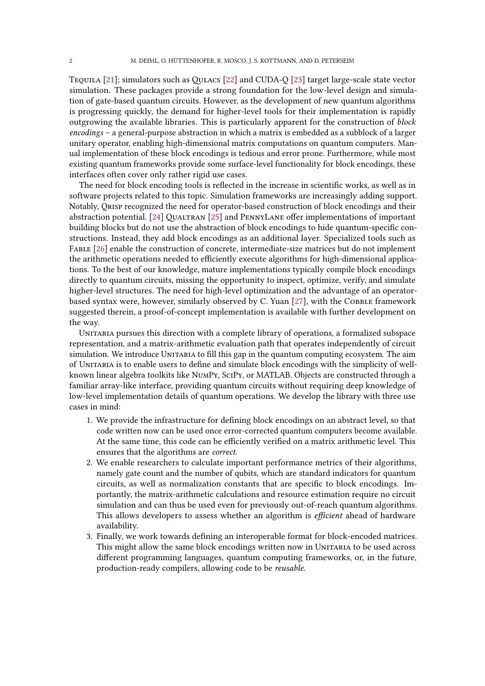
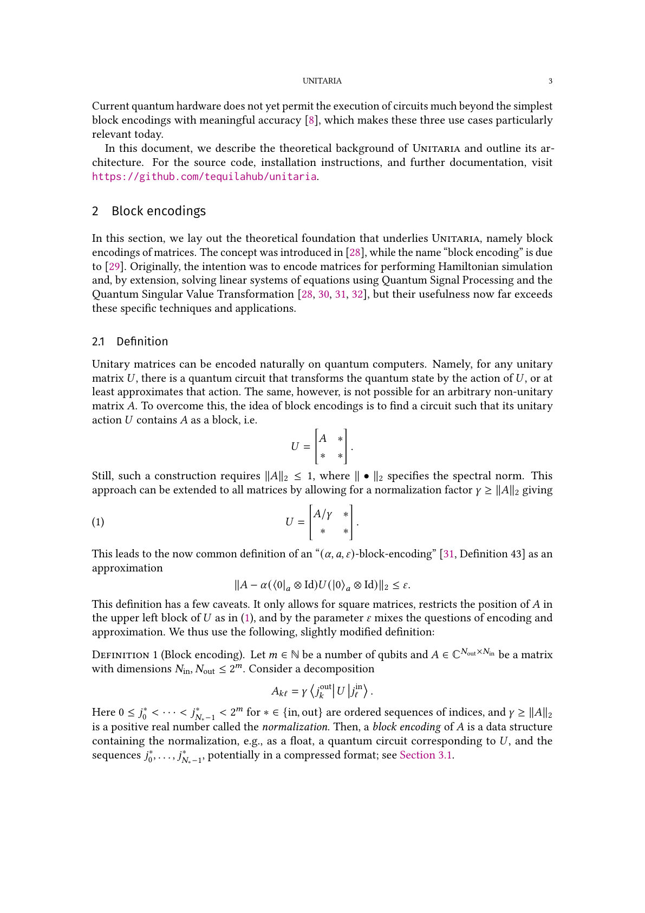
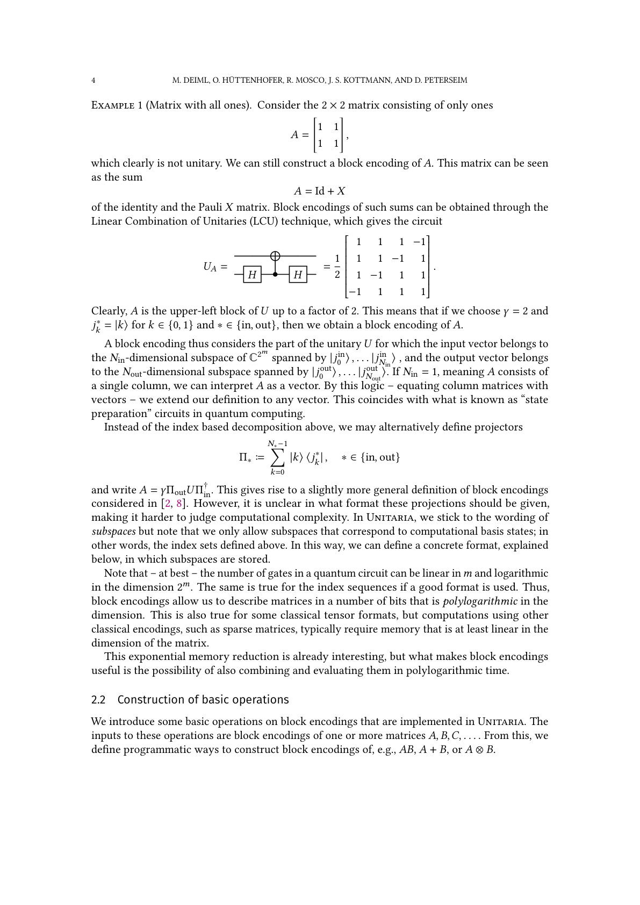
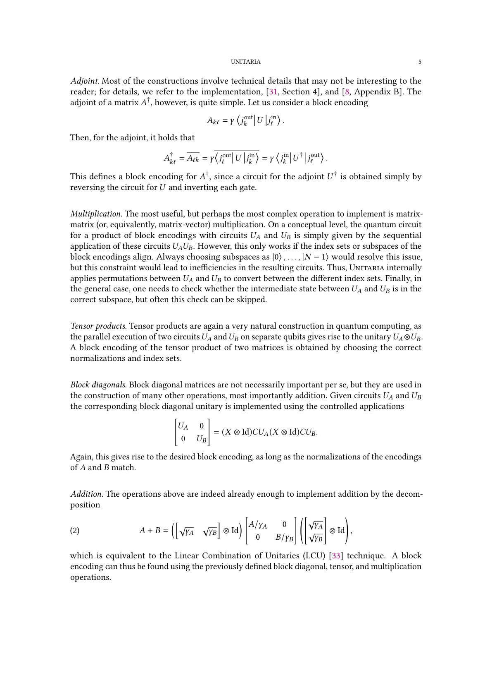
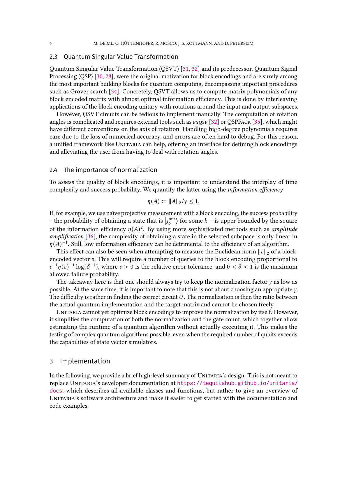
Summary. Unitaria is a new Python library that simplifies quantum linear algebra by allowing users to implement block encodings using a high-level, array-like interface. It enables researchers to develop and verify complex algorithms like QSVT and estimate hardware resources without the need for low-level circuit construction or expensive state-vector simulations.
Why it may be interesting. not directly relevant
Main problem. The manual construction of complex quantum circuits for block encodings and Quantum Singular Value Transformation (QSVT) is error-prone, requires deep low-level circuit knowledge, and lacks high-level abstraction for algorithm verification.
Main result. The authors introduce Unitaria, a Python library that provides a high-level, NumPy-like interface for defining, composing, and analyzing block encodings and quantum linear algebra algorithms.
Method. The library uses a computational graph approach with a 'lazy' execution model, implementing a matrix-arithmetic evaluation path that allows for classical simulation and resource estimation without full circuit execution.
Model / system. The framework operates on the gate-based quantum computing model, specifically focusing on the mathematical framework of block encodings where a matrix is embedded into a larger unitary operator.
Key observables. Gate counts, qubit counts, and normalization constants (gamma).
Important parameters / regimes. Normalization factor (gamma), information efficiency (eta), and subspace indices.
Assumptions / limitations. The current implementation is restricted to subspaces corresponding to computational basis states and does not yet include automatic optimization of the normalization factor.
Figures summary. Figure 1 illustrates a computational graph representing the implementation of the addition operation via the LCU technique.
Paper structure. The paper introduces the problem of block encoding complexity, defines the Unitaria software architecture and its node-based abstraction, details the matrix-arithmetic evaluation path for verification, and demonstrates applications such as integer addition, PDE solving, and Gaussian convolution.
We introduce Unitaria, a Python library that brings the simplicity of classical linear algebra toolkits such as NumPy and SciPy to the implementation of quantum algorithms based on block encodings, a general-purpose abstraction in which a matrix is embedded as a sub-block of a larger unitary operator. Their implementation has so far required deep knowledge of low-level circuit construction, which Unitaria aims to eliminate. The library provides a composable, array-like interface through which users can define block encodings of matrices and vectors, combine them through standard operations such as addition, multiplication, tensor products, and the Quantum Singular Value Transformation, and extract the resulting quantum circuits automatically. A key feature is a matrix-arithmetic evaluation path in which every operation can be computed directly on encoded vectors and matrices without dependence on ancilla qubits or circuit simulation. This enables correctness verification and classical simulation that scale well beyond what state vector simulation permits and also allows resource estimation, including gate counts, qubit counts, and normalization constants, without executing any circuit. Together, these capabilities allow researchers to develop, verify, and analyze quantum linear algebra algorithms today, ahead of the availability of error-corrected hardware. Unitaria is open source and available at https://github.com/tequilahub/unitaria.
Papers from cond-mat.mtrl-sci, mes-hall, other, soft, supr-con. These archives are de-prioritized — they appear at the end regardless of relevance score.
Highlighted author(s): Artyom Gorshkov
Authors: Iaroslav Mogunov, Artyom Gorshkov, Mikhail Rautskii, Tatyana Andryushchenko, Alexandra Kalashnikova
Type: experiment · Category: other · PDF: https://arxiv.org/pdf/2605.10483v1
Analysis basis: abstract only; PDF text extraction failed or PDF unavailable
Topic relevance: non-equilibrium dynamics 2/5
Summary. This paper explores how laser pulses trigger ultrafast demagnetization in (Cr0.5Mn0.5)2GaC MAX phase films. It identifies a two-step demagnetization process typical of 2D magnetic systems and provides a foundation for using light to control magnetism in these stable, nanolaminated materials.
Why it may be interesting. not directly relevant
Main problem. The investigation of ultrafast magnetization dynamics and laser-induced demagnetization processes in magnetic MAX phase thin films.
Main result. The study reveals a two-step type-II demagnetization process characteristic of 2D magnetic systems, with a dominant second stage lasting approximately 100 ps.
Method. Time-resolved magneto-optical Kerr effect (MOKE) spectroscopy combined with the application of the three-temperature model.
Model / system. A 40-nm-thick epitaxial film of the magnetic MAX phase (Cr0.5Mn0.5)2GaC, which exhibits magnetic ordering below approximately 250 K.
Key observables. Magnetization transients, electron-lattice, spin-lattice, and electron-spin coupling constants, and reconstructed spin heat capacity.
Important parameters / regimes. Magnetic ordering temperature (~250 K), demagnetization time (~100 ps), and laser fluence/temperature regimes.
Assumptions / limitations. The use of the three-temperature model to extract coupling constants.
Paper structure. Introduction to MAX phases, experimental setup using MOKE, analysis of demagnetization stages, extraction of coupling constants via the three-temperature model, and discussion of implications for 2D spintronics.
Magnetic MAX phases are nanolaminated metals that combine ceramic-like thermal and mechanical stability with peculiar magnetic ordering, making them attractive for thin-film optoelectronics and spintronics. However, their magnetization dynamics remain largely unexplored. Here, we investigate laser-induced ultrafast demagnetization in a 40-nm-thick epitaxial film of the magnetic MAX phase (Cr0.5Mn0.5)2GaC, which magnetically orders below ~250 K, using time-resolved magneto-optical Kerr effect spectroscopy. We reveal, that the demagnetization transients exhibit a two-step type-II demagnetization - a signature of two-dimensional magnetic systems. The fast demagnetization stage is small at low temperatures and fluences but becomes prominent with increasing excitation. The second stage dominates the process and has a characteristic time of approximately 100 ps. Applying the three-temperature model, we extract the electron-lattice, spin-lattice, and electron-spin coupling constants. The reconstructed spin heat capacity exhibits a weak temperature dependence, accounting for the absence of significant slowing down of demagnetization at elevated temperatures and fluences. Our results provide a starting point for experimental optical control of magnetism in MAX phases, bringing this broad class of materials into modern 2D spintronics.
Authors: A. M. Tishin
Type: both · Category: quantum information and computing · PDF: https://arxiv.org/pdf/2605.10578v1
Analysis basis: abstract only; PDF text extraction failed or PDF unavailable
Topic relevance: 🔥 QC/QI experiment 5/5
Summary. The study identifies a non-adiabatic resonance window that enables quantum gates to operate up to 9.2 times faster than the conventional adiabatic limit on 127-qubit IBM processors. While demonstrating high fidelity and universality across hardware, the researchers highlight that these windows are highly sensitive to small calibration drifts. This suggests that future high-performance quantum computing will require dynamic, rather than static, control protocols.
Why it may be interesting. The discovery of a specific non-adiabatic regime that significantly accelerates gate operations provides a new framework for high-speed control in open quantum systems and superconducting architectures.
Main problem. Standard adiabatic gate protocols in superconducting qubits suffer from a trade-off between gate speed and decoherence, limiting performance.
Main result. Discovery of a non-adiabatic resonance window that allows for a 9.2-fold reduction in gate duration while maintaining high fidelities, though these windows are sensitive to calibration drifts.
Method. Experimental implementation on IBM 127-qubit processors (ibm_fez and ibm_kingston) using synchronous cross-backend execution and longitudinal analysis of resonance profiles.
Model / system. Superconducting qubits implemented on IBM Quantum 127-qubit processors (specifically ibm_fez and ibm_kingston architectures).
Key observables. Gate fidelity, resonance profile correlation (R), and gate duration reduction factor.
Important parameters / regimes. Non-adiabatic resonance window at approximately 4.9; sub-percent calibration drifts.
Assumptions / limitations. The universality of the non-adiabatic parameter across independent hardware architectures.
Paper structure. The paper introduces the problem of adiabatic trade-offs, presents the discovery of the non-adiabatic resonance window, validates the universality of the effect across different IBM backends, analyzes the impact of calibration drifts, and concludes with the need for dynamic resonance-tracking control.
Standard adiabatic protocols for superconducting qubits often face a trade-off between gate speed and decoherence. In this work, using IBM Quantum 127-qubit processors (ibm_fez and ibm_kingston), we report the discovery of a fundamental non-adiabatic resonance window at about 4.9. This window demonstrates the potential for a 9.2-fold reduction in gate duration relative to the conventional adiabatic limit, while maintaining state high fidelities within the identified resonance windows. Through synchronous cross-backend execution, we demonstrate a near-perfect correlation (R = 0.9998) in the resonance profile, confirming the universality of the non-adiabatic parameter across independent hardware architectures. However, our longitudinal analysis reveals that these high-Q windows are sensitive to sub-percent calibration drifts, which dynamically shift the system into a stochastic regime. These findings suggest that achieving next-tier quantum performance requires a transition from static gate protocols to dynamic resonance-tracking control tools. This study provides both the theoretical foundation and the experimental evidence for such ultra-fast, high-performance quantum architectures.
Authors: Amit Jash, Maheswar Swar, Uri Shimon, Vladimir Umansky, Israel Bar-Joseph
Type: experiment · Category: quantum gases · PDF: https://arxiv.org/pdf/2605.09488v1
Analysis basis: abstract only; PDF text extraction failed or PDF unavailable
Topic relevance: 🔥 driven-dissipative phase transition 4/5 · 🔥 non-equilibrium dynamics 4/5 · spintronics-quantum-optics interface 3/5 · quantum optics experiment 2/5
Summary. This paper reports the experimental discovery of a coherent condensate of dark dipolar excitons in coupled quantum wells. The condensate exhibits long-range hydrodynamic transport and induces nuclear spin polarization through the Overhauser field. These findings establish dark excitons as a tunable platform for studying strongly interacting, non-equilibrium quantum fluids.
Why it may be interesting. It provides a bridge between polariton condensates and matter-like excitonic systems, demonstrating how driven-dissipative dynamics and strong interactions can be used to control quantum fluids and nuclear spin polarization.
Main problem. The study investigates the formation, coherence, and transport properties of a non-equilibrium condensate of dark dipolar excitons in coupled quantum wells.
Main result. The authors demonstrate macroscopic coherence, long-range hydrodynamic transport of density modes, and dynamic nuclear polarization driven by the dark exciton condensate.
Method. Experimental observation of photoluminescence (PL) darkening, changes in radiative recombination, and interference between incident and reflected exciton currents in coupled quantum wells.
Model / system. A driven-dissipative system of dark dipolar excitons in coupled quantum wells, characterized by long lifetimes and strong interactions.
Key observables. Photoluminescence darkening, radiative recombination channels, density (sound) mode propagation, Overhauser field-induced gap closing, and PL blueshift.
Important parameters / regimes. Dark-bright exciton gap (Delta), gain-loss competition, and millimeter-scale transport distances.
Paper structure. The paper reports evidence for coherence, describes the driven-dissipative condensation mechanism, details the hydrodynamic transport and nuclear polarization effects, and concludes with the implications for quantum fluid platforms.
We report direct evidence for macroscopic coherence in a condensate of dark dipolar excitons in coupled quantum wells and show that its formation follows a non-equilibrium, driven-dissipative mechanism. The condensation transition is governed by gain-loss competition, in which the exceptionally long lifetime of dark excitons enables their dominance in mode selection. Condensate formation is revealed by photoluminescence darkening, changes in radiative recombination channels, and the emergence of long-range hydrodynamic transport manifested by propagation of density (sound) modes over millimeter-scale distances. The buildup of dark exciton density induces dynamic nuclear polarization, which closes the dark-bright exciton gap, Δ, via the Overhauser field. This leads to nuclear spin polarization across the entire mesa, far beyond the optically excited region, and produces pronounced hysteresis behavior. At Δ~ 0 the gap is locked and the condensate loss are minimal, resulting in a second threshold manifested as a photoluminescence blueshift. Coherence is revealed through interference between incident and boundary-reflected exciton currents, producing spatial modulation of the photoluminescence from the radiative reservoir and enabling extraction of the condensate coherence length. These results establish dark excitons as a platform for coherent quantum fluids in a driven-dissipative, strongly interacting regime with electrical tunability, bridging the physics of polariton condensates and matter-like excitonic systems.
Authors: Jiguang Yao, Ying Yang, Chenyang Lu, Lihua Zhong, Xiaolong Fan, Desheng Xue, C. -M. Hu
Type: both · Category: other · PDF: https://arxiv.org/pdf/2605.09135v1
Analysis basis: abstract only; PDF text extraction failed or PDF unavailable
Topic relevance: 🔥 spintronics-quantum-optics interface 4/5 · interference shaping light 3/5 · quantum optics experiment 2/5
Summary. This paper provides a unified theory and experimental validation for magnetic nonreciprocity driven by chirality. It introduces the concept of synthetic chirality enabled by phase accumulation in coupling systems. The work establishes a framework that connects field polarization to complex coupling phases, distinguishing new mechanisms from conventional ones.
Why it may be interesting. This is highly relevant for quantum optics and open quantum systems as it introduces a method for engineering synthetic chirality and nonreciprocal photon-matter interactions through phase control.
Main problem. The study aims to unify the understanding of chirality mechanisms essential for magnetic nonreciprocity, specifically distinguishing between conventional chiral electromagnetic fields and synthetic chirality.
Main result. The authors establish a microscopic theoretical framework that maps field polarization to the phase of a complex coupling strength, providing a consistent formalism for both conventional and synthetic chirality.
Method. The work employs a unified experimental and theoretical approach, using systematic experiments to validate a theoretical framework based on phase accumulation in traveling-wave-mediated coupling systems.
Model / system. The system involves traveling-wave-mediated coupling systems where nonreciprocity is induced by breaking time-reversal symmetry via magnetic fields and introducing spatial asymmetry through chiral interactions.
Key observables. Field polarization and the phase of complex coupling strength.
Important parameters / regimes. Nontrivial phase accumulation in traveling-wave-mediated coupling.
Paper structure. The paper begins with an examination of conventional chiral interactions, moves to the investigation of synthetic chirality via phase accumulation, presents a new microscopic theoretical framework, and concludes with experimental validation and a comparison of symmetry properties.
Magnetic interactions have long served as the most robust and widely used approach for realizing nonreciprocity, with an externally applied magnetic field breaking time-reversal symmetry (TRS) and chiral photon-magnon interactions introducing spatial asymmetry. In this work, we investigate the chirality mechanisms essential for magnetic nonreciprocity from a unified experimental and theoretical perspective. We begin by examining conventional chiral interactions that generate chiral electromagnetic fields through specially designed structures, and then place particular emphasis on synthetic chirality enabled by nontrivial phase accumulation in traveling-wave-mediated coupling systems. We establish a microscopic theoretical framework that maps field polarization onto the phase of a complex coupling strength and validate it with systematic experiments, thereby providing a consistent formalism that describes both conventional and synthetic chirality. Notably, we highlight the symmetry properties and the unique features of synthetic chirality that distinguish it from conventional nonreciprocal mechanisms.
Authors: Zhenyuan Sun, S Withington, Songyuan Zhao
Type: both · Category: quantum information and computing · PDF: https://arxiv.org/pdf/2605.08591v1
Analysis basis: abstract only; PDF text extraction failed or PDF unavailable
Topic relevance: 🔥 QC/QI experiment 4/5 · non-equilibrium dynamics 2/5 · quantum measurements 2/5
Summary. The paper presents a new model to explain why superconducting resonators lose quality at low temperatures due to microwave-induced quasiparticles. By incorporating power-dependent phonon generation into the Rothwarf-Taylor equations, the authors provide a predictive tool for designing high-performance quantum sensors and processors.
Why it may be interesting. The study of quasiparticle dynamics and non-equilibrium phonon generation is highly relevant to understanding decoherence and dissipation in superconducting open quantum systems.
Main problem. The deviation of superconducting resonator quality factors from Mattis-Bardeen predictions at low temperatures due to nonthermal quasiparticles generated by microwave readout power.
Main result. A macroscopic model based on modified Rothwarf-Taylor equations that accurately predicts the transition between thermally-dominated and microwave-induced loss regimes.
Method. Development of a macroscopic model incorporating a power-dependent phonon generation term and validation via temperature sweep measurements.
Model / system. NbN microstrip resonators with eta-Ta terminations subjected to varying bath temperatures and microwave readout power levels.
Key observables. Quality factor (Q), bath temperature, and readout power.
Important parameters / regimes. Temperature-dependent loss, power-dependent phonon generation, and the transition between thermal and non-thermal quasiparticle regimes.
Assumptions / limitations. The model assumes a macroscopic approach based on modified Rothwarf-Taylor equations and focuses on the impact of phonon generation from readout power.
Paper structure. The paper introduces the problem of quasiparticle-induced loss, presents a modified Rothwarf-Taylor model, validates it with experimental temperature sweeps of NbN resonators, and discusses implications for device optimization.
The performance of superconducting resonators underpins a wide range of modern quantum technologies, yet their quality factor often deviates at low temperatures from standard Mattis-Bardeen predictions. This discrepancy is often attributed to nonthermal quasiparticles generated by microwave readout power, which limits the sensitivity of superconducting devices. We present a macroscopic model based on modified Rothwarf-Taylor equations that incorporates a power-dependent phonon generation term, providing an explicit relationship between quality factor, bath temperature and readout power. The model shows excellent agreement with temperature sweep measurements of NbN microstrip resonators with \b{eta}-Ta terminations over a wide dynamic range of readout power levels, accurately capturing the transition between thermally-dominated and microwave-induced loss regimes. This framework provides a predictive tool for optimizing superconducting resonators and advancing the design of high-Q devices for quantum sensing and quantum information processing.
Authors: Eyal Shoham, Sukanta Nandi, Ayelet Teitelboim, Jeny Jose, Gil Atar, Ashwin Ramasubramaniam Tomer Lewi, Doron Naveh
Type: experiment · Category: quantum information and computing · PDF: https://arxiv.org/pdf/2605.10336v1
Analysis basis: abstract only; PDF text extraction failed or PDF unavailable
Topic relevance: 🔥 quantum optics experiment 4/5 · QC/QI experiment 3/5
Summary. The paper demonstrates that strain-induced curvature in hBN flakes can suppress phonon-induced dephasing in single-photon emitters. By creating nanoscale bubbles, the researchers achieved higher spectral purity and narrower linewidths at room temperature. This provides a new pathway for engineering high-coherence quantum light sources for integrated photonics.
Why it may be interesting. This work is highly relevant to quantum optics and open quantum systems as it demonstrates a mechanical method (strain engineering) to control the environment-induced decoherence of a quantum emitter at room temperature.
Main problem. The coherence of single-photon emitters in hexagonal boron nitride (hBN) is limited by phonon-induced dephasing and spectral broadening at room temperature.
Main result. Strain-induced curvature in hBN flakes creates nanoscale bubbles that suppress phonon coupling, leading to enhanced spectral purity and narrower linewidths for quantum emitters.
Method. The researchers used thermal processing to create nanoscale bubbles, infrared nano-spectroscopy to probe strain-induced phonon mode splitting, and photon correlation measurements to assess single-photon purity.
Model / system. The system consists of single-photon emitters (defects) embedded within hexagonal boron nitride (hBN) flakes, specifically focusing on curved regions and nanoscale bubbles created by thermal strain.
Key observables. Debye-Waller factors, spectral linewidths, in-plane phonon mode splitting, and photon correlation measurements (g2).
Important parameters / regimes. Room temperature, strain gradients, and Debye-Waller factor of 0.91.
Assumptions / limitations. The study assumes that the observed enhancement is primarily due to the redistribution of the phonon density of states driven by strain.
Paper structure. The paper introduces the problem of phonon dephasing in hBN, describes the experimental creation of strain via thermal processing, presents infrared nano-spectroscopy results showing phonon mode splitting, demonstrates enhanced emitter coherence in curved regions, and provides first-principles calculations to support the phonon redistribution mechanism.
Hexagonal boron nitride (hBN) hosts robust room-temperature single-photon emitters, yet their coherence is typically limited by phonon induced dephasing and spectral broadening. Here, we show that thermally induced curvature in bulk like hBN flakes provides a strain enabled route to suppress defect phonon coupling under ambient conditions. Nanoscale bubbles formed by thermal processing generate strong through thickness strain gradients, which we directly probe by infrared nano spectroscopy. These measurements reveal strain induced splitting of in-plane phonon modes, evidencing a substantial local modification of the phonon density of states. Quantum emitters localized within these curved regions exhibit markedly enhanced room temperature spectral purity, with Debye Waller factors of 0.91 and narrower line widths than emitters in flat regions. Photon correlation measurements confirm high-purity single photon emission at room temperature. Supported by first-principles calculations, we attribute this behavior to strain driven phonon redistribution, which depletes phonons in tensile regions and accumulates them in compressive regions, thereby creating locally phonon suppressed environments for defect emitters. These results establish strain engineering as an effective route for phonon control in hBN and open a pathway toward high coherence, room-temperature quantum light sources for integrated nano photonic platforms.
Authors: A. I. Veretennikov, E. A. Shepelev, A. S. Shorokhov, P. A. Alekseev, I. A. Eliseyev, A. A. Fedyanin, M. V. Rakhlin
Type: experiment · Category: other · PDF: https://arxiv.org/pdf/2605.09645v1
Analysis basis: abstract only; PDF text extraction failed or PDF unavailable
Topic relevance: 🔥 quantum optics experiment 4/5 · QC/QI experiment 2/5
Summary. The researchers successfully demonstrated Purcell enhancement of excitonic emission in an InSe flake by integrating it with a Mie-resonant silicon nitride waveguide. They achieved a threefold reduction in decay time, providing a scalable platform for controlling light-matter interaction in van der Waals heterostructures.
Why it may be interesting. The paper demonstrates practical cavity QED-like control (Purcell enhancement) over excitonic recombination in a solid-state platform, which is highly relevant for developing integrated quantum photonic and quantum information components.
Main problem. Controlling the spontaneous emission dynamics of excitons in layered van der Waals semiconductors through hybrid integration with dielectric resonators.
Main result. Demonstration of Purcell enhancement in InSe integrated with a Si3N4 waveguide, achieving a reduction in excitonic decay time by up to a factor of three.
Method. Time-resolved photoluminescence spectroscopy of an InSe flake integrated with a Mie-resonant silicon nitride waveguide.
Model / system. A thin InSe (indium selenide) flake integrated with a Mie-resonant silicon nitride (Si3N4) waveguide designed to overlap with the InSe photoluminescence band.
Key observables. Excitonic decay time, Purcell factors for out-of-plane and in-plane excitons, and photoluminescence band overlap.
Important parameters / regimes. Purcell factor of approximately 3 for out-of-plane excitons and 2.1 for in-plane excitons.
Paper structure. The paper introduces the hybrid integration approach, describes the design of the Mie-resonant Si3N4 waveguide, presents time-resolved photoluminescence data, quantifies the Purcell enhancement, and discusses the implications for quantum photonic devices.
Hybrid integration of layered van der Waals (vdW) semiconductors with dielectric resonant structures provides an effective approach for controlling excitonic emission dynamics. Here, we demonstrate Purcell-enhanced spontaneous emission from a thin InSe flake integrated with a Mie-resonant Si$_3$N$_4$ waveguide. The structure is designed to spectrally overlap with the InSe photoluminescence band and enhance coupling of excitonic emission to the guided mode. Time-resolved photoluminescence shows a reduction of the excitonic decay time by up to a factor of three relative to planar InSe. The extracted Purcell factors are approximately 3 for out-of-plane excitons and 2.1 for in-plane excitons. These results demonstrate resonator-induced control of excitonic recombination in layered InSe and highlight vdW-dielectric interfaces as a platform for integrated excitonic and quantum photonic devices.
Authors: Hsin-Hui Huang, Gediminas Seniutinas, Haoran Mu, Nguyen Hoai An Le, Eulalia Puig Vilardell, Vijayakumar Anand, Jitraporn Vongsvivut, Tomas Katkus, Meguya Ryu, Junko Morikawa, Saulius Juodkazis
Type: experiment · Category: quantum information and computing · PDF: https://arxiv.org/pdf/2605.10000v1
Analysis basis: abstract only; PDF text extraction failed or PDF unavailable
Topic relevance: QC/QI experiment 3/5 · quantum optics experiment 3/5 · interference shaping light 2/5 · spintronics-quantum-optics interface 1/5
Summary. This paper presents the fabrication and characterization of thin diamond membranes for use in photonic and optomechanical devices. The authors demonstrate precise laser-cutting techniques and analyze the optical properties of diamond gratings in the infrared range. These membranes serve as a potential platform for quantum technologies across a wide spectral range.
Why it may be interesting. The development of diamond-based photonic and optomechanical platforms is highly relevant for quantum optics and quantum information, as diamond can host color centers for quantum emitters and high-quality mechanical resonators.
Main problem. Developing diamond membranes as a versatile platform for photonic, quantum, and optomechanical applications across the UV-IR spectrum.
Main result. Demonstrated the fabrication of diamond membranes via femtosecond laser cutting and characterized the IR absorbance dichroism in diamond gratings, revealing a sign change in dichroism when the grating period is 1-2 wavelengths.
Method. Femtosecond laser cutting (1030 nm, 200 fs) for structuring and IR characterization in reflection and transmission modes.
Model / system. Diamond membranes with thicknesses ranging from 1 to 10 micrometers, including engineered diamond gratings and form-birefringent structures.
Key observables. IR absorbance dichroism, light intensity distribution, and polarization-dependent interference patterns.
Important parameters / regimes. Membrane thickness (1-10 $\mu$m), grating period (1-2 wavelengths), and laser fluence (> 0.4 J/cm2/pulse).
Paper structure. The paper discusses the fabrication of diamond membranes, the characterization of IR properties in gratings, the demonstration of laser-based micro-structuring, and the modeling of light intensity in birefringent structures.
Diamond 1 - 10 micrometers thick membranes are platform for photonic, quantum and opto-mechanic devices with applications across UV-IR spectral ranges. IR characterization of diamond gratings in reflection and transmission showed a change of the IR absorbance dichroism between positive and negative when the grating period was 1-2 wavelengths (free space) including inside the region of the intrinsic diamond absorbance. Femtosecond laser cutting of micrometers-wide and mm-long structures are demonstrated by steps of carbonization > 0.4 J/cm2/pulse (1030 nm/200 fs) and oxidation of diamond membranes. Light intensity distribution inside form-birefringent diamond structure was modeled for a scaled-down structure and wavelength to reveal characteristic interference patterns for different polarizations.
Authors: Mauro Pulzone, Iñigo Robredo-Magro, Jorge Íñiguez-González
Type: theory · Category: statistical mechanics · PDF: https://arxiv.org/pdf/2605.10432v1
Analysis basis: abstract only; PDF text extraction failed or PDF unavailable
Topic relevance: non-equilibrium dynamics 3/5 · Keldysh / 2PI / non-Gaussian methods 2/5 · correlated / nonlocal dissipation 2/5 · methods for driven-dissipative 2/5
Summary. This paper addresses the gap in coarse-graining methods by providing a protocol to calculate the effective inertial and damping constants needed for nonequilibrium simulations. By applying this to PbTiO3, the authors demonstrate how to move beyond static free-energy landscapes to capture the full dynamics of ferroelectric materials.
Why it may be interesting. The development of a protocol to derive effective dissipation and inertia from underlying dynamics is highly relevant to the study of open quantum systems and the derivation of master equations for many-body dynamics.
Main problem. The derivation of effective dynamic constants (inertial and viscous-damping coefficients) for coarse-grained, mesoscopic, and macroscopic simulations of nonequilibrium dynamics.
Main result. The authors present a protocol to compute temperature-dependent inertial and damping coefficients for electric polarization, specifically demonstrated for the ferroelectric PbTiO3.
Method. A computational protocol designed to bridge atomistic simulations with coarse-grained Landau-like models, focusing on the calculation of effective dynamic constants.
Model / system. The study focuses on the soft-mode ferroelectric material PbTiO3, treated within a coarse-grained framework using collective variables like electric polarization.
Key observables. Temperature-dependent inertial and damping coefficients associated with electric polarization.
Important parameters / regimes. Mesoscopic and macroscopic scales (micrometers and microseconds); temperature-dependent dynamics.
Assumptions / limitations. The system can be described using a Landau-like potential and simple equations of motion governed by effective constants.
Paper structure. The paper introduces the problem of missing dynamic constants in coarse-graining, presents a new calculation protocol, applies it to PbTiO3, and discusses the implications for existing literature.
Computational studies of the thermodynamic properties of materials at the mesoscopic and macroscopic scales -- involving lengths and times of at least $μ$m and $μ$s, respectively -- rely on a coarse-graining approximation such that only a few relevant collective variables are treated explicitly. Those variables typically take the form of fields defined everywhere in space or macroscopic quantities when spatial inhomogeneities can be treated implicitly. The free energy is usually expressed as a Landau-like potential whose temperature-dependent minima track stable states, characteristic equilibrium fluctuations being implicitly accounted for. Further, the response of the system to external perturbations, and its relaxation toward thermal equilibrium, are described in terms of simple equations of motion governed by effective inertial and viscous-damping constants. There is considerable literature on the problem of deriving Landau free energy potentials, from either experiment or predictive atomistic simulations, including recent efforts to develop systematic machine-learning approaches that we denote ``third principles''. Much less attention has received the calculation of the effective constants controlling the nonequilibrium macroscopic or mesoscopic dynamics. Here we tackle that problem, describing a protocol that allows us to compute the temperature-dependent inertial and damping coefficients associated to the electric polarization in representative soft-mode ferroelectric PbTiO$_{3}$. Our scheme lends itself to a widespread application, although the non-trivial behaviors found in PbTiO$_{3}$ suggest that more case studies will be needed to finetune a general and robust calculation protocol. Our results also allow us to comment on common assumptions in the literature of effective dynamic treatments of ferroelectrics and related materials.
Authors: V. N. Mantsevich
Type: theory · Category: other · PDF: https://arxiv.org/pdf/2605.09088v1
Analysis basis: abstract only; PDF text extraction failed or PDF unavailable
Topic relevance: spintronics-quantum-optics interface 3/5 · non-equilibrium dynamics 2/5
Summary. This paper provides a theoretical framework to control valley pseudospin in TMD-based van der Waals heterostructures using magnetic proximity effects. It demonstrates that by tuning the relationship between tunneling and scattering rates, one can switch the sign of photoluminescence polarization. This offers a mechanism for long-distance manipulation of excitons and trions in magnetic-semiconductor heterostructures.
Why it may be interesting. The paper is relevant to quantum optics and open quantum systems due to its focus on the control of pseudospin dynamics and the manipulation of quasiparticle (exciton/trion) polarization via external laser excitation.
Main problem. Understanding how spin-dependent tunneling and intervalley scattering affect the polarization of photoluminescence in TMD/magnetic material van der Waals heterostructures.
Main result. The study reveals that the interplay between interlayer charge transfer and scattering lifetimes can allow for the switching of photoluminescence polarization sign under circularly polarized excitation.
Method. A self-consistent theoretical analysis of photoluminescence polarization dynamics, considering the competition between various timescales.
Model / system. Transition metal dichalcogenide (TMD) monolayers in contact with a 2D magnetic layer, forming a van der Waals heterostructure subject to the magnetic proximity effect.
Key observables. Photoluminescence (PL) polarization, spin and valley pseudospin dynamics, and the polarization sign.
Important parameters / regimes. Electron tunneling timescale, exciton and trion intervalley scattering lifetimes, and radiative lifetimes.
Assumptions / limitations. The model assumes the validity of the magnetic proximity effect in the TMD monolayer and focuses on the interplay of specific scattering and tunneling processes.
Paper structure. The paper presents a theoretical analysis of valley pseudospin control, proposes a self-consistent model for PL polarization, discusses the role of scattering and tunneling timescales, and generalizes the model to include bright and dark exciton dynamics.
We present a theoretical analysis of valley pseudospin control in the transition metal dichalcogenide (TMD) monolayer by utilizing the magnetic proximity effect of 2D magnetic layer and, propose self-consistent analysis of photoluminescence (PL) polarization peculiarities in TMD/magnetic material van der Waals heterostructures. We attribute observed peculiarities to the interplay between spin-dependent interlayer charge transfer and intervalley scattering of excitons and trions. The ratio between the electron tunneling timescale and the exciton and trion intervalley scattering lifetimes and radiative lifetimes determine the PL dynamics. A possibility to switch PL polarization sign due to the quasi-particles dynamics under circularly polarized laser excitations is revealed. We also discuss generalization of the proposed model due to the careful analysis of both intervalley and intravalley scattering processes between bright and dark excitons. Obtained results allow a long-distance manipulation of exciton and trion behaviors and open the possibilities for the effective control under spin and valley pseudospin in multilayer magnetic-semiconductor van der Waals heterostructures.
Authors: Siyuan Qian, Shaloo Rakheja
Type: theory · Category: numerical methods · PDF: https://arxiv.org/pdf/2605.08531v1
Analysis basis: abstract only; PDF text extraction failed or PDF unavailable
Topic relevance: methods for driven-dissipative 3/5 · non-equilibrium dynamics 2/5
Summary. This paper presents a new numerical framework using a CUDA-accelerated Fokker-Planck solver to study the stochastic dynamics of octupole moments in Mn3Sn. The method allows for the efficient simulation of thermally assisted switching at error rates much lower than those achievable with standard Monte Carlo methods. It demonstrates that the solver is highly accurate and sensitive to the precise rotation of the octupole moment.
Why it may be interesting. The development of an efficient Fokker-Planck solver for stochastic dynamics and the ability to reach ultra-low error probabilities is highly relevant to researchers working on open quantum systems and non-equilibrium many-body dynamics.
Main problem. Developing an efficient way to simulate thermally assisted octupole moment dynamics and switching in the chiral antiferromagnet Mn3Sn.
Main result. The authors developed a CUDA-accelerated Fokker-Planck solver that can access ultra-low error probabilities for switching events, reaching regimes that are computationally inaccessible to direct Monte Carlo simulations.
Method. The method combines a reduced Landau-Lifshitz-Gilbert (LLG) equation with the Fokker-Planck formalism and implements it via a CUDA-accelerated numerical solver.
Model / system. The system is the chiral antiferromagnet Mn3Sn, specifically focusing on the dynamics of the three-sublattice octupole moment.
Key observables. Octupole moment dynamics, switching behavior, equilibrium distributions, relaxation trajectories, and switching times.
Important parameters / regimes. Out-of-plane grid resolution, thermal assistance, and field-driven switching parameters.
Assumptions / limitations. The use of a reduced model for the octupole dynamics is assumed to capture essential physics accurately compared to the full three-sublattice model.
Paper structure. The paper introduces a reduced stochastic framework, benchmarks the reduced LLG model against full dynamics, derives and implements a CUDA-accelerated Fokker-Planck solver, validates the solver against Monte Carlo simulations, and applies it to study field-driven switching.
We develop a reduced stochastic framework for thermally assisted octupole moment dynamics in Mn3Sn by combining the reduced Landau--Lifshitz--Gilbert (LLG) equation with the Fokker--Planck formalism. The reduced model is benchmarked against the complete three-sublattice octupole dynamics and is shown to capture the essential switching behavior with good accuracy. We then derive the corresponding Fokker--Planck equation, which is implemented and solved via a CUDA-accelerated solver. The analysis shows that the octupole dynamics are highly sensitive to the out-of-plane grid resolution because ultrafast rotation of the octupole is controlled by its very small deviations from the basal plane. The solver is validated against Monte Carlo simulations through equilibrium distributions, relaxation trajectories, and switching times. Finally, we apply the method to thermally assisted field-driven switching and demonstrate efficient access to ultra-low error probabilities beyond the practical reach of direct Monte Carlo simulations.
Authors: Debarshi Banerjee, Gonzalo Díaz Mirón, Alex Rodriguez, Ali Hassanali
Type: theory · Category: disordered systems and neural networks · PDF: https://arxiv.org/pdf/2605.08381v1
Analysis basis: abstract only; PDF text extraction failed or PDF unavailable
Topic relevance: entanglement & information structure 2/5 · methods for driven-dissipative 2/5 · non-equilibrium dynamics 2/5
Summary. The paper introduces a new machine learning method called Differentiable Information Imbalance to identify which molecular motions drive non-radiative decay. By analyzing trajectory simulations, the method can simplify complex, high-dimensional motions into interpretable, low-dimensional modes. This provides a scalable way to understand the mechanisms behind electronic transitions in complex molecular systems.
Why it may be interesting. The use of information-theoretic machine learning to reduce the dimensionality of complex, non-adiabatic dynamics is highly relevant for understanding many-body dynamics and open quantum system evolutions.
Main problem. Identifying the specific high-dimensional nuclear degrees of freedom that drive non-radiative decay via conical intersections in molecular dynamics simulations.
Main result. Development of an unsupervised, information-theoretic framework (DII) that successfully extracts low-dimensional, physically interpretable modes responsible for electronic transitions.
Method. An unsupervised framework based on Differentiable Information Imbalance (DII) that ranks structural descriptors by their predictive relevance to electronic observables.
Model / system. The method is applied to various molecular systems including the methaniminium cation, furan, L-glutamine, L-pyroglutamine-ammonium, and a photoactive molecular motor, using trajectory surface hopping (TSH) simulations.
Key observables. Electronic energy gaps and oscillator strengths.
Assumptions / limitations. The framework assumes that the underlying dynamics can be captured via trajectory surface hopping (TSH) simulations and that structural descriptors can be correlated with electronic observables.
Paper structure. Introduction of the challenge in high-dimensional dynamics, presentation of the DII framework, application to various molecular systems, and analysis of the distinction between localized and collective structural rearrangements.
Non-radiative decay in photoexcited molecular systems is driven by nuclear motion toward conical intersections (CIs), where electronic states become degenerate and nonadiabatic transitions occur. Identifying the nuclear degrees of freedom responsible for CI access from nonadiabatic molecular dynamics (NAD) simulations remains challenging because the underlying motions are high-dimensional and collective. Here, we introduce an unsupervised, information-theoretic framework based on Differentiable Information Imbalance (DII) to identify the nuclear coordinates governing CI access directly from trajectory surface hopping (TSH) simulations. By quantifying correlations between structural descriptors and electronic observables, including energy gaps and oscillator strengths, the method ranks nuclear degrees of freedom by predictive relevance. A multi-step protocol then extracts low-dimensional, physically interpretable modes associated with non-radiative decay. We apply the framework to the methaniminium cation, furan, L-glutamine, L-pyroglutamine-ammonium, and a photoactive molecular motor. Across all systems, the method recovers known mechanistic coordinates while revealing the relative importance of competing modes when multiple structural distortions contribute to CI access. The analysis also reveals a systematic distinction between observables: energy gaps are typically governed by a small number of localized coordinates, whereas oscillator strengths depend on more collective and distributed structural rearrangements. Overall, the DII-based framework combines predictive power with direct interpretability, providing a general and scalable route for extracting mechanistic insight from high-dimensional NAD data and constructing reduced-dimensional models of excited-state dynamics.
← Index · ← Previous · Next →